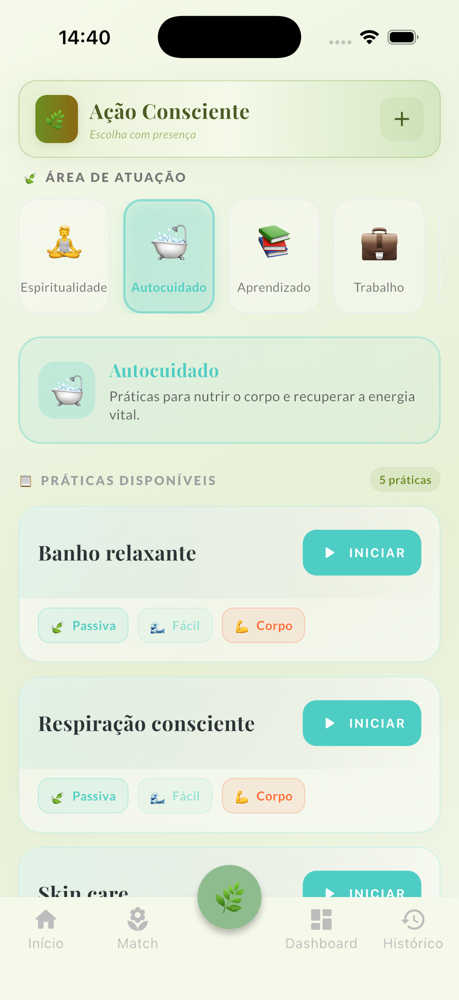
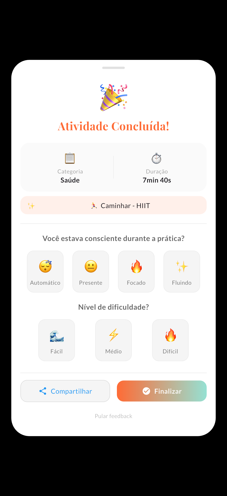

Leve a presença para fora do tapete
Você é presente na meditação e disperso no resto do dia. O RootFlow registra cada prática com seu nível de consciência — de 😴 automático a ✨ fluindo — e mantém a intenção viva nas 23 horas que ficam de fora.

A lacuna entre as sessões
O problema nunca foi a sua prática. É a continuidade. Sem um fio que conecte uma sessão à próxima, cada meditação recomeça do zero — e a intenção se perde no automático do dia.
O coração do app
Antes de cada prática, você marca o quão presente esteve. Baseado no modelo de consciência de David Hawkins, o RootFlow transforma um sentimento abstrato em algo que você acompanha e cultiva — sessão após sessão.
O ritual diário
Respiração, yoga, caminhada na natureza, silêncio. Escolha a prática e marque, com honestidade, como você esteve presente nela.
Mente, Corpo e Espírito em harmonia visual. Energia Ativa e Passiva em balanço. Sua semana inteira, num olhar sereno.
O Smart Match percebe o que faltou e sugere com delicadeza — um momento de corpo, um instante de espírito. Direção, nunca cobrança.
Pensado para a sua jornada
Meditação, respiração, contemplação. O app valoriza o silêncio tanto quanto o movimento — algo raro num mundo de streaks.
Veja sua constância como um rio, não como uma corrente quebrada. Um dia de pausa não apaga semanas de presença.
Do onboarding com áudio de floresta à interface silenciosa, tudo foi desenhado para baixar o ruído, não aumentá-lo.

"Eu ensinava presença e perdia a minha no caos do dia. Hoje meu RootFlow é a primeira coisa que abro — e a última."
Um espaço só seu
Tudo fica no seu aparelho. Sem conta, sem servidor, sem rede. O RootFlow funciona offline porque a intimidade da sua prática é sagrada. Exporte quando quiser, apague quando quiser.
Comece hoje
Pagamento único de R$ 28. Sem assinatura, sem conta. Registre sua primeira prática e comece a estender a presença para o dia inteiro.